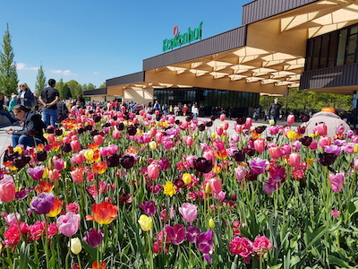

Activities
Keukenhof
Keukenhof is only opened for four months in a year. So when it's open you have to make use of it. Going to Keukenhof and seeing all of the beautiful flowers and mostly, Tulips, is the perfect way to spend your time during Easter. During Easter the flowers are at their best and the most beautiful.
Ordering online: € 19,50
Ordering at the desk: € 19,-
Opening times: 21 March - 10 May,
from 10:00 - 19:00
Address: Stationsweg 166A 2161 AM Lisse